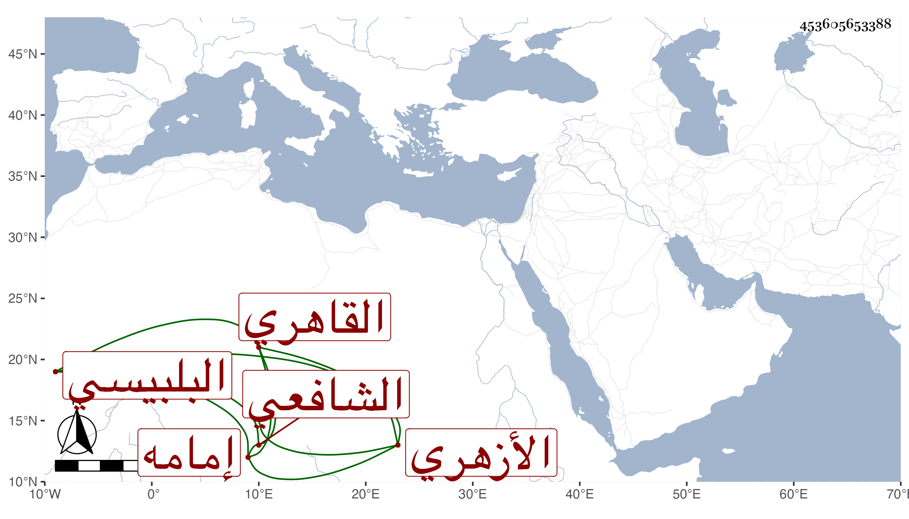

0902Sakhawi.DawLamic.ITO20230111-ara1.EIS1600.453605653388
Biography ID: 453605653388
392
محمد بن علي بن أحمد بن عثمان بن عبد الرحمن بن عثمان المحب بن النور البلبيسي الأصل القاهري الأزهري إمامه وابن أئمته الشافعي الماضي أبوه وجده وجد أبيه . حفظ القرآن وتلاه على أبيه للسبع إفرادا وجمعا ، ولازم مجلس شيخنا للسماع في رمضان خاصة ، وأم بعد أبيه بالجامع وكان يدفع عن مباشرتها بنفسه لعدم تصونه . وآل أمره إلى أن كف وانقطع مدة ، ثم مات في ثامن عشري رمضان سنة تسع وثمانين بعد توعك طويل واستقر ابنه يحيى في الإمامة وكان قد ناب عنه في حياته وأظنه جاز الستين عفا الله عنه .
